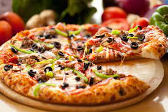

Pizza

Description
Discover how to make traditional spaghetti carbonara. This classic Italian pasta dish combines a silky cheese sauce with crisp pancetta and black pepper.
Ingredients
- 2 ½ cups warm water(600 mL)
- 1 teaspoon sugar
- 7 cups all-purpose flour(875 g), plus more for dusting
-
6 tablespoons extra virgin olive oil, plus more for greasing
Steps
- “Bloom” the yeast by sprinkling the sugar and yeast in the warm water. Let sit for 10 minutes, until bubbles form on the surface.
- In a large bowl, combine the flour and salt. Make a well in the middle and add the olive oil and bloomed yeast mixture. Using a spoon, mix until a shaggy dough begins to form.
- Once the flour is mostly hydrated, turn the dough out onto a clean work surface and knead for 10-15 minutes. The dough should be soft, smooth, and bouncy. Form the dough into a taut round.
- Sprinkle semolina onto an upside down baking sheet and place the stretched crust onto it. Add the sauce and ingredients of your choice.
- Slide the pizza onto the preheated pizza stone or pan. Bake for 15 minutes, or until the crust and cheese are golden brown.
- Nutrition Calories: 1691 Fat: 65 grams Carbs: 211 grams Fiber: 12 grams Sugars: 60 grams Protein: 65 grams